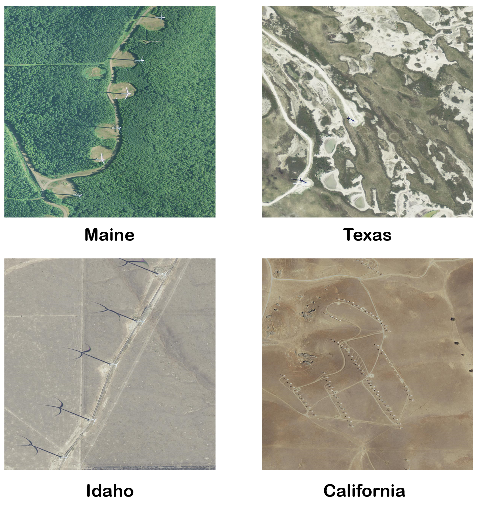
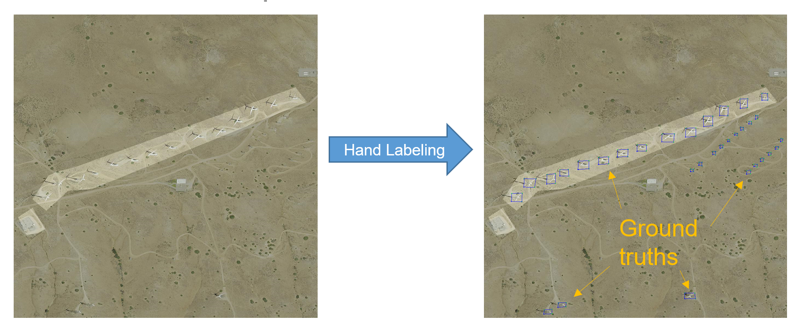
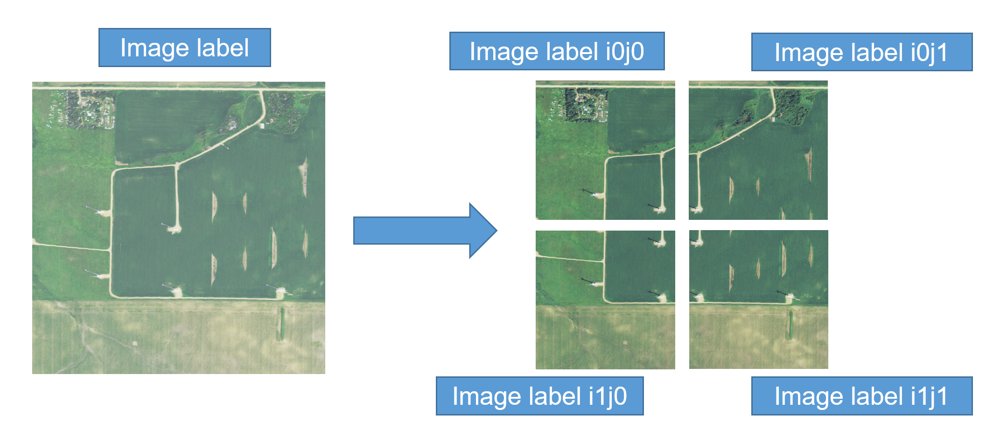
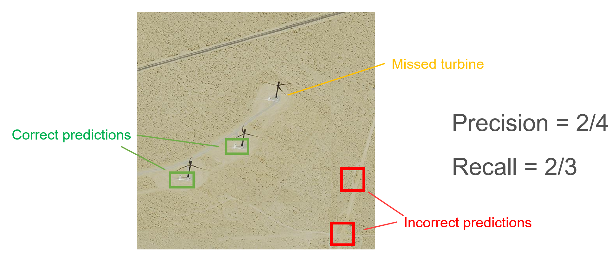

Project Overview
Motivation
Access to electricity is important for promoting economic development along with improving living conditions. Around 1.2 billion people worldwide do not have electricity in their homes, many of them located in Africa and Asia. The first step in this process is to understand the location of existing energy infrastructure, which helps enable analysis of the distribution of energy resources as well as the consumption of energy. Doing this through surveys is incredibly time-consuming, which is why we are trying to locate energy infrastructure automatically by applying deep learning techniques to overhead imagery.
Deep Learning and Object Detection
Using deep learning, we can feed an image to a model, and the model is able to make predictions about the contents or characteristics of that image. A common
technique for image analysis is classification, in which the model predicts the class of the image out of a list of possible classes.
In the image below, the model predicts that the image is of a cat, and is 90% confident with this classification. The model learns how to predict these classifications based
on examples that are shown to it. After it has been trained, it can classify images that it has not seen before.
For this project, we are focusing on object detection, which is a combination of classification with localization. The model analyzes images and predicts bounding boxes that
surround each object. It then also classifies each object, producing a confidence score corresponding to the prediction. In the image below, the model predicted that there was
an object in the box shown in red, and also predicted that the object within that box is a cat. The model learns how to predict these boxes and classifications based on examples shown to it.
These examples have labels that we refer to as ground truth that contain the information of where the objects are in the image.
Background
For five years, the Duke Energy Data Analytics Lab has worked on developing deep learning models that identify energy infrastructure, with an end goal of generating maps of power grid networks that can aid policymakers in implementing effective electrification strategies. In 2015-16, researchers created a model that can detect solar photovoltaic arrays with high accuracy [2015-16 Bass Connections Team]. In 2018-19, this model was improved to identify different types of transmission and distribution energy infrastructures, including power lines and transmission towers [2018-19 Bass Connections Team]. Last year's project focused on increasing the adaptability of detection models across different geographies by creating realistic synthetic imagery [2019-20 Bass Connections Team]. In our project, we build upon this progress and try to improve the model's ability to detect rare objects.
Challenge: Rare Objects
Object detection networks, like the one used in this work, are notorious for their "data hunger," requiring large amounts of annotated training data to perform well. For common infrastructure like buildings and roads, there is ample real-world data available to train such models. However, for rare objects like wind turbines, there is not enough available imagery to satisfy the data requirements of these models. Further, due to their rarity and low spatial density in overhead imagery, acquiring more data can be very expensive.
Solution: Synthetic Imagery
Since training data is difficult to collect, in this project we explore creating synthetic data to supplement the real data that are available. We do this using CityEngine, which can render and generate 3D landscapes and structures based on input from the designer. In our case, we are populating a landscape with wind turbine models. Then we can position the camera in the overhead position and capture images with similar appearances to overhead imagery. Since we placed the wind turbines in the synthetic image, we can also generate ground truth labels for each of these images.
Methods
Here you can see our roadmap for the research project. In the following sections, we will discuss each of these steps.
Overhead Imagery
Our real-world overhead imagery comes from the NAIP Power Plant Aerial Imagery Dataset, a collection of 4,454 overhead images of power plants across the United States. Images of wind turbines predominantly come from California, the Midwest, and around northern Texas.
Diversity Between States

From these images, we can notice significant variability in features like land types and even wind turbine
shapes between different states. For example, imagery from California is almost exclusively in
desert regions. California has a range of sizes of wind turbines including some that are small
and densely-clustered. On the other end of the spectrum, states like Maine have mostly large
wind turbines in regions with lots of vegetation. Images from the same state tend to be
relatively self-similar.
By including variation in features like geography, wind turbine size, and shadow size in the training dataset,
the model can generalize more broadly. However, it can be very difficult for the model to learn these novel
features if they are absent from the training data.
Annotating
Ground truth labels were created using the image labeling GUI pyimannotate. Bounding boxes were hand-drawn around the wind turbines in each image, and the labels were stored in .txt files to be accessed during training and testing.
Preprocessing
The size of the raw overhead images was very large and slowed training speeds. To increase efficiency, we divided the 1114x1114 pixel images into four 608x608 pixel patches that could then be fed into the model. Ground truth labels were then adjusted to account for resizing.
Creating Synthetic Data
CityEngine
To create the synthetic data we used the program CityEngine, which can be used to generate landscapes and structures in a 3D environment. One reason why we picked CityEngine is that it uses a hyper-realistic graphics engine called the Unreal Engine. The program also allows the integration of python scripts along with the ability to take and save images with cameras, which is useful for automating the collection of our synthetic data.
Workflow
To create the synthetic imagery, we first compiled a list of overhead images that did not contain wind turbines. These images were for the background on which to generate wind turbine models. We also collected 3D wind turbine models from online that we would like to use for the synthetic data.
We then used a python script and CityEngine files to randomly select the images and generate the 3D wind turbine models in random locations on top of the images. The script then moves the camera to the four quadrants of the images, and in each location, it captures and saves a photo. This process is then repeated with the wind turbine models colored in as black and the background colored as white. These black and white images tell us where the models are placed and can be used to create ground truth labels.
After this process, we have a set of synthetic images, and for each of these images, we have a corresponding file that locates the position of the wind turbine models within the image.
Creating Labels
The last step is to then use the black and white annotations to create ground truth labels. This is done by finding groups of black pixels and then finding and recording the dimensions and positions of these pixel groupings. This can be visualized as drawing boxes around each of these models. This is done for each image, giving us a label corresponding with each image, where the label contains the information about every model within that image.
Experimentation and Results
Basic Experimental Setup
Once we have our synthetic data created and our real imagery preprocessed, we are ready to run experiments. These experiments involve altering the composition of the training dataset to see how the performance of the model changes. The basic experimental setup for this project is to train the model on a control condition with just real data, and then to use the same dataset but supplement it with synthetic images, and then measure the difference in performance. This will produce two different models and their performance is measured on the same testing set. With this setup, we are only changing one variable and so we can attribute any differences in performance to the added synthetic data.

Performance Metrics
To understand our results, it's important that we first understand the metrics that we have chosen to measure performance. The primary metrics we look at are precision and recall. We'll explain how these metrics can be interpreted in terms of the images on the left.
- Precision: Out of the objects that the model classified as a wind turbine, what fraction of these were actually wind turbines.
- Recall: Of the wind turbines present in the data, what fraction of these did the model find.
Since the goal of this model is to detect objects in very large sets of overhead imagery, manually removing objects misclassified as wind turbines is much easier than identifying undetected wind turbines across the entire dataset. For this reason, we prioritize recall over precision as a metric of good performance.
Results
Adding synthetic data to our training set significantly improved the precision of our model. However, the recall does not change significantly. Our hypothesis for this is that with the added synthetic data, model was doing well on large wind turbines while missing many of the small wind turbines. This prompted us to create synthetic data that contained small wind turbines to try to fix this issue.
Additional Experiments
In addition to this first experiment, we also conducted additional experiments by changing how the dataset was split between the training and testing. One experiment that we explored was excluding a geographic region from the testing set. We wanted to choose a region that would be the most difficult for the model to perform on without having training data to learn from. We chose to exclude California and Arizona from the testing set because the geography is both self-similar and fairly different from the other regions and also because the small wind turbines in California would be very difficult for the model to test on.
After testing the model with this setup, we then were able to add synthetic data to see if the performance improves. We specifically created synthetic data that mimicked the real overhead imagery in California and Arizona. We then added these to the training dataset and observed how the performance changed.
Results
After adding the synthetic data to the training set, TO BE UPDATED WITH MORE RESULTS
CONCLUSION
The goal of this project was to create synthetic data that could be added to our training set to improve performance. This goal was met, but we think that with the fine-tuning of our synthetic data, we should be able to increase the performance more, especially in terms of the recall. TO BE UPDATED WITH MORE RESULTS
Future Work
- Develop a larger variety of synthetic images for training. This includes varying the lighting of the CityEngine scenes along with including different variations of models. We would like to include a wire structured wind turbine in the synthetic data to improve performance on those types of turbines
- Improve the quality of our synthetic images. This would involve purchasing high-quality models from online or designing models ourselves to emulate the real wind turbines that we observe in the overhead imagery
- Apply this model on a large scale. We would train the model and then apply it to Google Earth Engine imagery for the United States to locate wind turbines throughout the U.S.
- Apply these techniques to detect other types of energy infrastructure. This will likely include coal plants and transmission lines
Team
Tyler Feldman
Class of 2023
Electrical and Computer Engineering, Computer Science
Matt Robbins
Class of 2023
Computer Science, Mathematics
Team Leaders:
Dr. Kyle Bradbury
Dr. Jordan Malof
Project Manager:
Bohao Huang